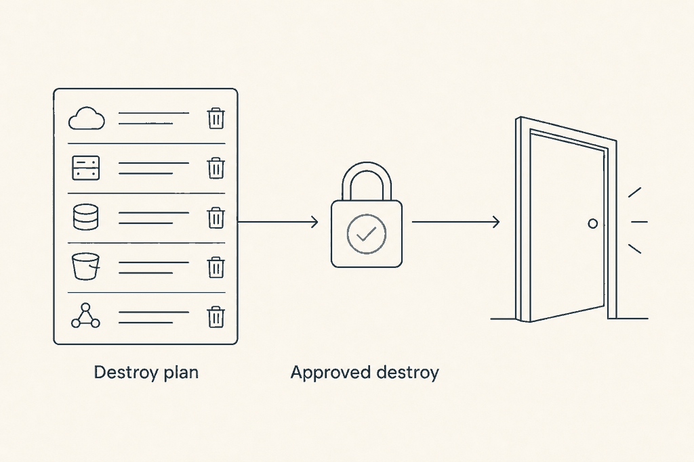
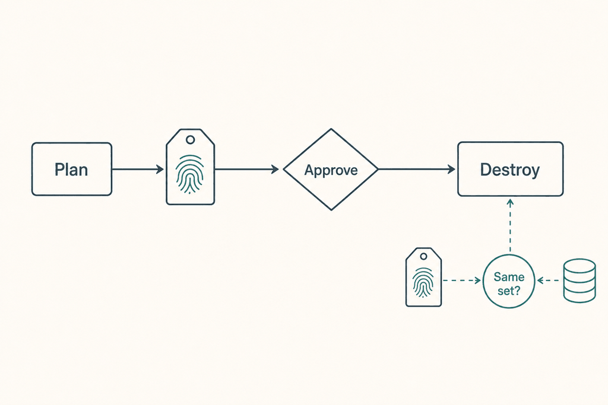

Plan: A separate, approval-gated destroy flow for deployment stacks

Purpose
Add a supported way to delete a deployment stack, as two new, explicit flows: a destroy plan that lists everything the destroy would delete or detach, and a destroy that runs only after an environment approval and only if the stack still holds exactly what the plan listed. Both flows exist on GitHub (two new composite actions) and Azure DevOps (two new stage templates). The existing plan and deploy actions and templates are not changed.
Problem
With deployment_mode: stack the pipeline can create and update a stack but never remove one. Retiring an environment means running az stack ... delete by hand, with none of the plan, review and approval the pipeline gives a deployment. Azure/bicep-deploy adds operation: delete to its single action; that puts a deletion one input away from a deployment. bicep-action's promise is that the deploy job runs exactly what was planned, so a destroy has to carry the same promise: destroy exactly what the destroy plan listed.
Solution
One new script, scripts/az-stack-destroy.sh, with two actions. plan reads the stack with az stack {scope} show (the stack what-if has no delete operation), works out what the requested unmanage setting would do, applies the existing approved-deletes list, writes destroy-plan.json and a Markdown section, and outputs a fingerprint: a SHA-256 over the stack ID, the unmanage settings and the sorted managed resource IDs. destroy runs after approval, re-reads the stack, recomputes the fingerprint, stops on any difference, runs the approved-deletes check again, then calls az stack {scope} delete with the planned settings and --yes and confirms the stack is gone. The fingerprint travels the same way stack_settings already does: an action output on GitHub, an isOutput variable on Azure DevOps.

Relevant Files
Existing Files
- existing
scripts/az-deploy.sh— stack name, scope and ID derivation (lines 348-369), the approved-deletes check (439-450), the summary writer (143-210),stack_settingshandoff (304-325), subscription selection (273-285). Read only in this change. - existing
scripts/pr-comment.sh— builds the comment and the step summary, always POSTs toCOMMENTS_URL. Gets a small, opt-inCOMMENT_MODE=summaryand a destroy heading. - existing
scripts/pipeline-summary.sh— theSTEPSlist names the steps that ran; gets the destroy step names. - existing
scripts/az-login.sh,scripts/azure-subscription.sh— reused unchanged (sign-in; subscription wait). - existing
.github/actions/plan/action.yml,.github/actions/deploy/action.yml— the pattern to copy: step order,LOG_ORDER, outputs, Upload logs. Not edited. - existing
.azuredevops/templates/plan-stage.yml,.azuredevops/templates/deploy-stage.yml— the pattern to copy: the script download loop,stageDependenciesoutputs, thedeploymentjob on an environment. Not edited. - existing
docs/configuration.md— settings table, stacks section, outputs table, Azure DevOps-only table. Updated. - existing
docs/how-it-works.md— "Deployment stacks and the delete gate", "Deploy exactly what was planned", "Logs and artifacts". Updated. - existing
docs/examples/README.md— example index. Updated. - existing
docs/setup-github.md,docs/setup-azure-devops.md— environment and permission setup; get a short "destroy" subsection.
New Files
- new
scripts/stack-common.sh— sourced helper:resolve_stack(name, scope, ID, scope args),approved_check,stack_members,fingerprint. - new
scripts/az-stack-destroy.sh—plananddestroyactions. - new
.github/actions/destroy-plan/action.yml— GitHub destroy plan. - new
.github/actions/destroy/action.yml— GitHub destroy. - new
.azuredevops/templates/destroy-plan-stage.yml— Azure DevOps destroy plan stage. - new
.azuredevops/templates/destroy-stage.yml— Azure DevOps destroy stage (environment approval). - new
docs/examples/github/destroy.yml—workflow_dispatchdestroy workflow. - new
docs/examples/azure-devops/destroy.yml— manual destroy pipeline using the two templates. - new
tests/destroy/run.sh,tests/destroy/bin/az,tests/destroy/fixtures/*.json— a fakeazon PATH that serves recordedaz stack showandaz resource listoutput, and the scenario runner. - new
.github/workflows/test-destroy.yml— runsshellcheckandtests/destroy/run.shon pull requests that touch the new files (only if the repository already runs shell checks in CI; otherwise skip and document the commands).
Implementation Phases
IMPORTANT: Execute every phase and task step by step, in order, top to bottom.
Status markers: [] idle · [wip] in progress · [x] complete · [f] failed. All start as []; the Build Plan workflow updates them as it works.
[] Phase 1: Spike on a throwaway stack, record fixtures
Everything later depends on three facts that cannot be read from the help text: the shape of az stack show, what deleteAll does to resource groups and to resources inside them that the stack does not manage, and whether deny settings stop az stack delete. Prove them first, on a scratch subscription, and record the output as test fixtures. No production code in this phase.
1. Build the scratch stacks
[]Create a stack at subscription scope whose template creates one resource group and one storage account in it, with--deny-settings-mode none. Create a second withdenyWriteAndDelete. Create a third at group scope. Create a fourth at management group scope if a scratch management group exists.[]In the first stack's resource group, create a storage account by hand (not through the stack). This is the "unmanaged resource inside a managed group" case.
2. Record and answer
[]Saveaz stack sub show,az stack group showandaz stack mg showoutput, with IDs replaced by fixed fake GUIDs, astests/destroy/fixtures/stack-sub.json,stack-group.json,stack-mg.json,stack-deny.json. Note where managed resource groups appear (properties.resourcesor a separate list) and the values ofstatusanddenyStatus.[]Runaz stack sub delete --aou deleteResources, then (on a fresh copy)--aou deleteAll, and record what remains. Confirm thatdeleteAlldeletes the hand-made storage account together with the group.[]Runaz stack sub delete --aou deleteAll --yesas the pipeline identity against thedenyWriteAndDeletestack. Record whether it succeeds. If it fails, record the error code (expectDenyAssignmentAuthorizationFailed) and whetherexcludedPrincipalsfixes it.[]Record the exact roles the identity needed for each case (stack delete, resource delete), for the setup docs.[]Write the answers into the Notes section of this plan (Amendments, appended) and into the ADR's Consequences if any assumption changed.
3. Testing Strategy
Manual, against Azure. The output of this phase is evidence, not code. Run in a subscription that holds nothing else.
[]az stack sub show --name spike-a -o json | jq '.properties | keys'— shows the real property names the later jq filters rely on.[]az resource list --resource-group spike-a-rg --query "[].id" -o tsvafterdeleteResources— shows what survives.[]jq -e . tests/destroy/fixtures/*.json— every fixture is valid JSON and contains no real subscription or tenant ID (grep -E '[0-9a-f]{8}-[0-9a-f]{4}' tests/destroy/fixtures/*.jsonreturns only the fake GUIDs).
[] Phase 2: Shared helper and the destroy plan script
Build scripts/stack-common.sh and the plan action of scripts/az-stack-destroy.sh, following the structure of az-deploy.sh: set -e, the ERR trap, a step_${LOG_ORDER}_${LOG_NAME}.log and .md pair, TF_BUILD branches for Azure DevOps output and error syntax. The helper is new and used only by the new script; az-deploy.sh stays as it is.
1. stack-common.sh
[]resolve_stack: copy the logic ofaz-deploy.shlines 348-369 (repository name fallback,tr -c 'A-Za-z0-9._()-' '-',cut -c1-90, thegroup/mg/subscope switch). Setsstack_name,stack_scope,stack_idand the arraystack_args.[]approved_check: takes a newline list of IDs, readsSTACK_APPROVED_DELETES, lower-cases both sides, prints the IDs that are not listed (same rule asaz-deploy.sh439-450). A missing or unreadable file counts as an empty list.[]stack_members: readsaz stack showJSON on stdin and prints normalised{id, type, status, denyStatus}objects for managed resources, managed resource groups and managed management groups, using the property names recorded in Phase 1.[]fingerprint: SHA-256 of a canonical JSON document; see the code below.
# stack-common.sh (sketch)
fingerprint() { # $1 stack id, $2 unmanage, $3 resources-without-delete-support, stdin: show JSON
local canon
canon=$(stack_members | jq -S -c --arg id "${1,,}" --arg u "${2}" --arg r "${3}" \
-s '{id: $id, unmanage: $u, rwd: $r,
managed: (map({id: (.id | ascii_downcase), status}) | sort_by(.id))}')
printf '%s' "${canon}" | sha256sum | cut -d' ' -f1 # shasum -a 256 on macOS
}2. az-stack-destroy.sh plan
[]Select the subscription withselect_subscriptionfromazure-subscription.sh(the same block asaz-deploy.sh273-285), so the subscription wait works for destroy too.[]Fail early ifSTACK_CONFIRM_NAMEis set and is not equal to the resolvedstack_name(case-sensitive). Fail if the scope istenant(no stacks there). Fail ifaz stackis missing.[]Read the stack:az stack "${stack_scope}" show --name "${stack_name}" "${stack_args[@]}" -o json. Not found: fail with "stack not found" and writedestroy-plan.jsonwith anerrorfield (same convention assummary_error,az-deploy.sh159-163). AprovisioningStateother thansucceeded: fail, because a stack that is mid-update or failed has an unreliable resource list.[]Work out the effect.detachAll: deletes empty, every managed ID indetaches.deleteResources: managed non-group resources indeletes, groups indetaches.deleteAll: everything managed indeletes; pluscollateral, every resource in each managed group that is not managed (az resource list --resource-group ... --query "[].id"minus managed IDs).[]Gate:approved_checkondeletespluscollateral. Any unlisted ID setsblocked: truewithblockedReasonand fails the step. AdetachAllplan has nothing to approve and passes.[]Write${LOG_PATH}/destroy-plan.json(schema below) through a.tmpfile and validate it withjq -ebefore publishing it, likewrite_summarydoes. A failed plan leaves no file.[]Write the Markdown section tostep_a1_destroy_plan.md: a one-line headline with counts, the delete list, the detach list, the collateral list, anydenyStatusother thannone, and a```jsonblock holding a ready-to-commit approved list when the plan is blocked.[]Set the outputsdestroy_plan(file path) anddestroy_fingerprint(stack-destroy;id=<stack id>;unmanage=<mode>;rwd=<mode>;sha256=<hash>), using the sameTF_BUILD/GITHUB_OUTPUTbranch assummary_output(az-deploy.sh152-158).
// destroy-plan.json, schemaVersion 1
{
"schemaVersion": 1,
"mode": "destroy",
"scope": "sub",
"stack": { "name": "app-test", "id": "/subscriptions/.../deploymentStacks/app-test" },
"settings": { "actionOnUnmanage": "deleteAll",
"resourcesWithoutDeleteSupport": "fail",
"denySettingsMode": "denyDelete" },
"counts": { "managed": 7, "delete": 7, "detach": 0, "collateral": 1 },
"deletes": ["/subscriptions/.../resourceGroups/app-rg", "..."],
"detaches": [],
"collateral": ["/subscriptions/.../storageAccounts/handmade"],
"denied": ["/subscriptions/.../storageAccounts/app"],
"blocked": false,
"blockedReason": null,
"fingerprint": "sha256 hex",
"createdAt": "2026-11-13T10:00:00Z",
"error": null
}The counts, deletes and detaches keep the names used by whatif-summary.json, so the approval-gate example that reads that file can read this one with the same jq.
3. Comment and summary plumbing
[]scripts/pr-comment.sh: addCOMMENT_MODE. When it issummary, write the comment file and the step summary ($GITHUB_STEP_SUMMARYor##vso[task.uploadsummary]) but skip thecurlPOST. Unset keeps today's behaviour exactly. Add a heading case fordestroy_plan_comment: "Destroy plan for ...", and fordestroy_comment.[]scripts/pipeline-summary.sh: add"destroy_plan:Destroy plan"and"destroy:Destroy"toSTEPS.
4. Testing Strategy
The unit-level test is a fake az on PATH: a small bash script that answers az stack * show, az resource list, az account show/set from the Phase 1 fixtures, and records every other call to a file so a test can assert that no delete was ever called by the plan. Scenarios are run by tests/destroy/run.sh, each setting environment variables and asserting on the exit code, destroy-plan.json and the output lines.
| Scenario | Setup | Expected |
|---|---|---|
| detachAll, no approved list | stack-sub.json, unmanage=detachAll | exit 0, deletes: [], all managed IDs in detaches, fingerprint set |
| deleteResources, nothing approved | approved file missing | exit 1, blocked: true, every resource listed in the reason, file still written |
| deleteResources, all approved | approved file holds every ID, in different case | exit 0, case ignored, groups under detaches |
| deleteAll with collateral | group holds an unmanaged resource, not approved | exit 1, the collateral ID is named, because it would be deleted with the group |
| wrong confirmation | STACK_CONFIRM_NAME=other | exit 1 before any az stack show call |
| stack not found | fake az returns ResourceNotFound | exit 1, error set, no counts |
| stack still updating | provisioningState: deploying | exit 1 |
| read-only | any | the fake az call log holds no delete and no create |
[]shellcheck scripts/stack-common.sh scripts/az-stack-destroy.sh scripts/pr-comment.sh— no new findings (the repository already uses shellcheck directives, for example inazure-subscription.sh).[]bash tests/destroy/run.sh plan— every scenario in the table passes.[]git diff --stat origin/main -- scripts/az-deploy.sh scripts/az-login.sh scripts/azure-subscription.sh— empty: nothing existing changed.[]LOG_PATH=$(mktemp -d) JOB_STATUS=success COMMENT_MODE=summary GITHUB_STEP_SUMMARY=/dev/null bash scripts/pr-comment.shwith a stub step file — exits 0 and makes no network call (run withCOMMENTS_URLunset); withoutCOMMENT_MODEit behaves as before.
[] Phase 3: The destroy action of the script
Add the destroy action to scripts/az-stack-destroy.sh. It is the part that makes the promise: it deletes only a stack whose managed set still matches the plan.
1. Behaviour
[]RequirePLAN_DESTROY_FINGERPRINT. Empty, or still containing an unexpanded$((the Azure DevOps caseaz-deploy.shhandles at line 317), fails with "A destroy needs the destroy plan's fingerprint (destroy_fingerprint)". Parse the plannedunmanage,rwdandsha256from the string; the stack ID in it must equal the resolvedstack_id.[]Fail if the settings given to the destroy (STACK_ACTION_ON_UNMANAGE,STACK_RESOURCES_WITHOUT_DELETE_SUPPORT) differ from the planned ones, naming both. This mirrorscheck_plan_settings(az-deploy.sh304-325):deleteAllafter adetachAllplan must fail.[]Re-read the stack, requireprovisioningStatesucceeded, recompute the fingerprint with the same function. On a mismatch fail with "The stack changed since the destroy plan. Run the destroy plan again." and, whenPLAN_DESTROY_FILEpoints at the plan file, list the IDs added and removed (common the two sorted lists).[]Run the same effect calculation andapproved_checkagain on the current state, so a destroy can never delete something the committed list does not hold today.[]Run the delete, then verify. Never pass--bypass-stack-out-of-sync-errorunlessSTACK_BYPASS_OUT_OF_SYNC=true; when set, print a warning that names the risk.
cmd=(az stack "${stack_scope}" delete --name "${stack_name}" "${stack_args[@]}"
--action-on-unmanage "${unmanage}"
--resources-without-delete-support "${rwd}" --yes)
[ "${STACK_BYPASS_OUT_OF_SYNC-}" = true ] && cmd+=(--bypass-stack-out-of-sync-error true)
echo "Run: ${cmd[*]}"
"${cmd[@]}" 1> >(tee -a "${log}") 2> >(tee -a "${log}" >&2)
# The stack must be gone.
if az stack "${stack_scope}" show --name "${stack_name}" "${stack_args[@]}" >/dev/null 2>&1; then
fail "az stack delete returned success but the stack still exists."
fiNote that az stack group delete uses --resource-group and az stack mg delete uses --management-group-id; stack_args from resolve_stack already carries the right flag, but the --location that az-deploy.sh adds for sub and mg creates must be left out (delete and show do not take it).
2. Testing Strategy
Same fake az. The fake serves the stack JSON from a file the test can swap between the plan call and the destroy call, which is how the "added after the plan" scenario is made.
| Scenario | Setup | Expected |
|---|---|---|
| happy path | plan, then destroy with the plan's fingerprint, unchanged stack | exit 0; exactly one az stack sub delete call carrying --action-on-unmanage and --yes |
| resource added after the plan | plan; add a resource ID to the served stack JSON; destroy | exit 1; message names the added ID; no delete call in the fake az log |
| resource removed after the plan | remove one ID from the served JSON | exit 1, no delete call |
| status changed | one resource goes managed to deleteFailed | exit 1 (status is in the hash) |
| settings differ | plan with detachAll, destroy with deleteAll | exit 1 before any show |
| no fingerprint | empty, and $(plan.destroy_fingerprint) literal | exit 1 both times |
| approved list edited after the plan | remove one ID from the file between plan and destroy | exit 1 (second gate), no delete call |
| delete succeeds but the stack remains | fake show keeps answering after delete | exit 1 |
| bypass flag | STACK_BYPASS_OUT_OF_SYNC=true | the flag appears in the call, with a warning line; absent otherwise |
[]bash tests/destroy/run.sh destroy— every scenario passes, and the "resource added" scenario asserts the delete call count is zero.[]shellcheck scripts/az-stack-destroy.sh— clean.[]bash tests/destroy/run.sh resolve-parity—resolve_stackgives the same name, scope and ID asaz-deploy.shfor ten inputs (long names, characters outside the allowed set, each scope). The test extracts the derivation lines fromaz-deploy.shby running its stack branch with the fake az andDEPLOYMENT_MODE=stack, and reads the ID from its log.
[] Phase 4: GitHub composite actions
Two actions modelled on .github/actions/plan/action.yml and .github/actions/deploy/action.yml. They share the same step skeleton (scripts on PATH, install tools, Azure login, work, debug info, upload logs) and none of the template, PSRule, cost or snapshot steps.
1. destroy-plan action
[]Create.github/actions/destroy-plan/action.ymlwith the branding of the plan action (a different icon, for examplelist) and inputs:azure_client_id,azure_client_secret,azure_tenant_id,azure_subscription_id,subscription_wait_minutes,scope,resource_group,management_group,stack_name,stack_action_on_unmanage(defaultdetachAll),resources_without_delete_support(defaultfail),stack_approved_deletes,confirm_stack_name,log_severity,artifact_identifier,token. Same names and defaults as the plan action wherever the setting is the same.[]Outputs:destroy_fingerprint,destroy_plan(path), both fromsteps.destroy_plan.outputs.[]Steps in order: Add scripts to system path, Install tools (LOG_ORDER: b1), Azure login (az-login.sh,b2), Destroy plan (id: destroy_plan,az-stack-destroy.sh plan,LOG_NAME: destroy_plan,LOG_ORDER: a1), Job status steps, Add comment, Job summary, Show debug info, Upload logs asdestroy_plan_logs[_id].[]Add comment runs onpull_requestevents as in the plan action. A second step, Job summary, runs on every other event withCOMMENT_MODE: summaryandLOG_NAME: destroy_plan_comment, so aworkflow_dispatchrun gets its summary.
2. destroy action
[]Create.github/actions/destroy/action.ymlwith the same connection inputs plusplan_destroy_fingerprint(required, described as the destroy-plan action's output),plan_destroy_file(optional),stack_bypass_out_of_sync(defaultfalse), and the unmanage and approved-deletes inputs, which must equal the plan's.[]Steps: Add scripts to system path, Install tools, Azure login, Destroy (az-stack-destroy.sh destroy,LOG_NAME: destroy,LOG_ORDER: a1), Job status, Add comment or Job summary (as above,destroy_comment), Show debug info, Upload logs asdestroy_logs[_id]. No auto merge: there is nothing to merge.
3. Workflow shape (the example)
on:
workflow_dispatch:
inputs:
confirm_stack_name: { description: "Type the stack name to confirm", required: true }
action_on_unmanage: { type: choice, options: [detachAll, deleteResources, deleteAll], default: detachAll }
concurrency: { group: azure-deploy-app, cancel-in-progress: false } # same group as deployments
permissions: {}
jobs:
destroy_plan:
runs-on: ubuntu-24.04
permissions: { contents: read, id-token: write }
outputs:
fingerprint: ${{ steps.plan.outputs.destroy_fingerprint }}
plan_file: ${{ steps.plan.outputs.destroy_plan }}
steps:
- uses: actions/checkout@v7
- id: plan
uses: innofactororg/bicep-action/.github/actions/destroy-plan@v1
with: { ..., stack_name: app-test, confirm_stack_name: ${{ inputs.confirm_stack_name }},
stack_action_on_unmanage: ${{ inputs.action_on_unmanage }},
stack_approved_deletes: infra/approved-deletes.json }
destroy:
needs: destroy_plan
runs-on: ubuntu-24.04
environment: test-destroy # required reviewers; a separate environment from deploys
permissions: { contents: read, id-token: write }
steps:
- uses: actions/checkout@v7
- uses: innofactororg/bicep-action/.github/actions/destroy@v1
with: { ..., plan_destroy_fingerprint: ${{ needs.destroy_plan.outputs.fingerprint }} }destroy job checks out the same ref the plan job did only because workflow_dispatch pins one commit per run. The approved-deletes file is read at that commit by both jobs, so editing the file after the plan needs a new run.4. Testing Strategy
actionlint is not installed here; install it in CI or locally with go install github.com/rhysd/actionlint/cmd/actionlint@latest. Behaviour is covered by the script tests; these checks cover the wiring.
[]actionlint .github/actions/destroy-plan/action.yml .github/actions/destroy/action.yml docs/examples/github/destroy.yml— no errors.[]python3 -c "import yaml,sys; [yaml.safe_load(open(f)) for f in sys.argv[1:]]" .github/actions/destroy*/action.yml— parses.[]diff <(yq '.inputs | keys' .github/actions/plan/action.yml) <(yq '.inputs | keys' .github/actions/destroy-plan/action.yml)— review: every shared setting kept the same name.[]Dispatch the example workflow from a fork against the scratch subscription with a wrongconfirm_stack_name— the plan job fails and the destroy job never starts. Dispatch again with the right name — the destroy job waits for the environment and shows the pending review.
[] Phase 5: Azure DevOps stage templates
Two templates with the same parameters as plan-stage.yml and deploy-stage.yml. The script download loop is hand-maintained in each template, so the new templates list exactly the scripts they use: az-stack-destroy, stack-common, azure-subscription, install-tools, pr-comment. A missing entry fails at download time, which the testing section checks.
1. destroy-plan-stage.yml
[]Parameters:stageName(DestroyPlan),displayName,dependsOn,condition,variables,serviceConnection. Variables block as inplan-stage.yml(LOG_PATH,RUN_ID,SOURCE_PATH, merged caller variables).[]One jobdestroy_plan: checkout (the approved-deletes file is in the repository), Install tools,AzureCLI@2step nameddestroy_planrunning./az-stack-destroy.sh plan(so its outputs aredestroy_plan.destroy_fingerprintanddestroy_plan.destroy_plan), Pipeline summary, Add comment (onPullRequestonly, as today) and aCOMMENT_MODE=summaryvariant for every otherBuild.Reason, Upload logs asdestroy_plan_logs_$(ARTIFACT_IDENTIFIER)_$(System.JobAttempt).
2. destroy-stage.yml
[]Parameters asdeploy-stage.yml:environmentName(defaultDestroy, a different default fromDeploy),planStageName(DestroyPlan),planJobName(destroy_plan),dependsOn([DestroyPlan]).[]Adeploymentjob on the environment, withPLAN_DESTROY_FINGERPRINT: $[ stageDependencies.${{ parameters.planStageName }}.${{ parameters.planJobName }}.outputs['destroy_plan.destroy_fingerprint'] ]in the job variables (the same expression form asPLAN_STACK_SETTINGSindeploy-stage.ymlline 73). The approval check on that environment is the gate. Steps: checkout, Install tools, Destroy, Pipeline summary, Upload logs asdestroy_logs_....
3. Example pipeline
trigger: none
pr: none
parameters:
- name: confirmStackName
type: string
displayName: Type the stack name to confirm
- name: actionOnUnmanage
type: string
default: detachAll
values: [detachAll, deleteResources, deleteAll]
stages:
- template: .azuredevops/templates/destroy-plan-stage.yml@bicep_action
parameters:
serviceConnection: test_arm_connection
variables:
SUBSCRIPTION_ID: 11111111-1111-1111-1111-111111111111
STACK_NAME: app-test
STACK_CONFIRM_NAME: ${{ parameters.confirmStackName }}
STACK_ACTION_ON_UNMANAGE: ${{ parameters.actionOnUnmanage }}
STACK_APPROVED_DELETES: infra/approved-deletes.json
- template: .azuredevops/templates/destroy-stage.yml@bicep_action
parameters:
environmentName: test-destroy
serviceConnection: test_arm_connection
variables: { ...same values... }4. Testing Strategy
Azure DevOps cannot be run locally. Validate the YAML structurally, run the scripts under TF_BUILD=1 in the fake-az harness to prove the ##vso output lines, then run once on a scratch Azure DevOps project.
[]TF_BUILD=1 bash tests/destroy/run.sh plan— the scenarios pass with##vso[task.setvariable variable=destroy_fingerprint;isOutput=true]in the output and noGITHUB_OUTPUTwrite.[]yq '.stages' .azuredevops/templates/destroy-plan-stage.yml .azuredevops/templates/destroy-stage.yml— parses;grep -c 'environment:' .azuredevops/templates/destroy-stage.ymlprints at least 1 (the approval hook exists).[]for s in az-stack-destroy stack-common azure-subscription install-tools pr-comment; do test -f scripts/$s.sh || echo MISSING $s; done— every script the templates download exists on the branch.[]Run the example pipeline on the scratch project, withWORKFLOW_VERSIONset to this branch. The destroy stage must stop at the environment approval; approve it once and see the stack deleted; run again after adding a resource to a copy of the stack and see the destroy stage fail with the mismatch message.
[] Phase 6: Documentation and examples
The existing docs state the plan-equals-deploy promise in one place and list every setting in one table. Extend both rather than adding a parallel document, and keep the new text short.
1. Reference and explanation
[]docs/configuration.md: add a "Destroying a stack" section after "Deployment mode and stacks", and rows to the settings-at-a-glance table forconfirm_stack_name/STACK_CONFIRM_NAME,resources_without_delete_support/STACK_RESOURCES_WITHOUT_DELETE_SUPPORT,stack_bypass_out_of_sync/STACK_BYPASS_OUT_OF_SYNC,plan_destroy_fingerprint/ automatic,plan_destroy_file. Job column values:DP(destroy plan) andDD(destroy). Add the two outputs to the Outputs table (destroy_fingerprint=destroy_plan.destroy_fingerprint;destroy_plan=destroy_plan.destroy_plan) andPLAN_DESTROY_FINGERPRINTto the "do not set yourself" sentence under Azure DevOps only.[]docs/how-it-works.md: add "Destroying a stack" after "Deployment stacks and the delete gate" with a mermaid flowchart (plan, gate, approval, re-read, fingerprint compare, delete, verify), a table of what each unmanage setting deletes (resources, groups, management groups, collateral), the fingerprint contents, the destroy-plan.json schema, and the known residual window between the final re-read and the delete call. Add one bullet to "Deploy exactly what was planned" and rows to the artifact table in "Logs and artifacts" (destroy_plan_logs_...,destroy_logs_...).[]docs/setup-github.mdanddocs/setup-azure-devops.md: how to create the*-destroyenvironment with required reviewers (a different reviewer group from deployments is recommended), and the roles the identity needs from the Phase 1 spike. Say that deny settings are not a replacement for the approval.[]docs/troubleshooting.md: entries for "stack changed since the destroy plan", "unapproved delete in the destroy plan", "DenyAssignmentAuthorizationFailed on destroy" and "resource without delete support".
2. Examples
[]Writedocs/examples/github/destroy.yml(workflow above, filled in, with the generic placeholder IDs the other examples use) anddocs/examples/azure-devops/destroy.yml. Each starts with a comment block that says when to use it and what the reviewer should read.[]Add both to the tables indocs/examples/README.md.[]Add a short pointer under "Deployment stacks" inREADME.mdif the README lists features there.
3. Testing Strategy
Docs are checked for broken anchors and for drift against the code: every setting named in the docs must exist as an input or variable, and the other way round.
[]grep -ho '`[a-z_]*`' docs/configuration.md | sort -ucompared withyq '.inputs | keys' .github/actions/destroy*/action.yml— every input is documented.[]npx -y markdown-link-check docs/configuration.md docs/how-it-works.md docs/examples/README.md docs/adr/0007-stack-destroy-flow.md— no dead links or anchors.[]actionlint docs/examples/github/destroy.ymlandyq . docs/examples/azure-devops/destroy.yml— both examples parse.[]git diff origin/main --stat, then read the full diff once — no real subscription, tenant or client IDs, and no customer or company names in docs, fixtures, examples or tests; only the placeholder GUIDs the other examples use.
[] Phase 7: End-to-end on a scratch subscription
The fake az proves the logic; only Azure proves the commands. Run both platforms against throwaway stacks and record the results in the pull request.
1. Scenarios
[]GitHub,detachAll: stack record deleted, resources untouched.[]GitHub,deleteAllwith the full approved list: group and everything in it gone, destroy job waited for the reviewer.[]GitHub,deleteAllwith a hand-made resource in the group and no approval for it: the plan fails and names it.[]Resource added after the plan: run the plan; before approving, redeploy the stack with one extra resource (or add it with the stack's template); approve. The destroy job fails with the mismatch, deletes nothing, and the stack is still there.[]Same four scenarios on Azure DevOps with the templates.[]AdenyWriteAndDeletestack, destroyed by the pipeline identity: record the result against the Phase 1 expectation.
2. Testing Strategy
[]az stack sub list -o tableandaz group list -o tableafter each scenario — show exactly the expected survivors.[]jq -e '.schemaVersion == 1 and .mode == "destroy" and (.fingerprint | length == 64)' destroy-plan.jsonon the downloaded logs artifact of each plan run — the file is the documented shape.[]Existing flows unchanged: run the existingrecommended.ymlandms.azure.deploy.ymlexamples once against the branch — they still plan and deploy as before.
Validation Commands
Execute these commands to validate the entire plan is complete:
[]shellcheck scripts/*.sh— the whole script folder, old and new, is clean.[]bash tests/destroy/run.sh all— every plan, destroy and parity scenario passes, including "resource added after the plan stops the destroy".[]TF_BUILD=1 bash tests/destroy/run.sh all— the same on the Azure DevOps output path.[]actionlint .github/actions/*/action.yml docs/examples/github/*.yml— all actions and examples are valid.[]git diff --stat origin/main -- scripts/az-deploy.sh .github/actions/plan .github/actions/deploy .azuredevops/templates/plan-stage.yml .azuredevops/templates/deploy-stage.yml— empty: existing plan and deploy are untouched.[]grep -rnE '[0-9a-f]{8}-[0-9a-f]{4}-[0-9a-f]{4}-[0-9a-f]{4}-[0-9a-f]{12}' docs tests specs | grep -vE '(00000000-0000|11111111-1111|22222222-2222)'— prints nothing: only placeholder GUIDs are present.[]Phase 7 results are recorded in the pull request description.
Questionables
What does az stack show return for resource groups and management groups, and what does deleteAll do to unmanaged resources in a managed group?
The plan assumes managed resource groups are listed with the managed resources, and that deleting a group deletes everything in it. Phase 1 proves both on a throwaway stack. If the shape differs, only stack_members changes; if deleteAll behaves differently, the collateral rule changes.
Do deny settings block az stack delete for the pipeline's own identity?
Microsoft's stack documentation presents the stack as the party that removes its own resources, so deny settings should not block it, and the ADR is written that way. It is not proved here. Phase 1 tests denyWriteAndDelete with the pipeline identity. If it fails, the options are listing the identity in excludedPrincipals at deploy time (a change to the deploy flow, so out of scope here) or documenting a one-off update step. --bypass-stack-out-of-sync-error is not a deny-settings workaround and is off by default.
Default for resources_without_delete_support: fail or detach?
The plan proposes fail: a destroy never leaves a resource behind without saying so. The cost is a half-finished destroy when a resource type cannot be deleted, which then needs a manual step or a second run with detach. The destroy plan cannot know which types lack delete support, so it cannot warn in advance.
One approved-deletes file for deploys and destroys, or a separate input?
The plan reuses stack_approved_deletes so there is one reviewed list and one mental model. The risk: an ID approved for a one-off delete during a deployment also approves it for a destroy. A separate destroy_approved_deletes input costs one setting and removes that overlap. Needs a decision before Phase 4.
Should systemData.lastModifiedAt be part of the fingerprint?
Including it means any redeploy of the stack, even a no-op one, invalidates a destroy plan. That is stricter than "same managed set" but simpler to explain: the stack changed, plan again. Leaving it out means a changed deny setting or template slips past the check. Proposed: leave it out of the hash, and print a warning in the destroy job if it differs.
Should a destroy plan expire?
A plan approved a week later is still checked by the fingerprint, so it is safe against drift but not against forgotten context. An optional plan_max_age_minutes (default off) would use createdAt. Cheap to add; the question is the default.
Separate identity and environment for destroy?
Recommended in the docs, not enforced: a federated credential scoped to the *-destroy environment, with delete rights, so the deploy identity never holds them. This changes setup effort for adopters, so it is guidance rather than a check.
Should the destroy plan also run on pull requests?
It will, because the comment step is wired like the plan action's. The open point is whether to document a pull request trigger at all. Proposed: no, only the manual trigger in the examples, so that merging a pull request never starts a destruction.
When do the stack helpers move out of az-deploy.sh?
After this change merges, in its own pull request, with the parity test from Phase 3 as the safety net. Doing it here would touch the script every deployment runs.
Does the flow protect against deleting a stack another pipeline owns?
Not beyond the name and the confirmation. Two pipelines that use the same stack_name at the same scope share one stack, and the destroy cannot tell them apart. The existing docs already say to give each pipeline its own name; the destroy docs repeat it.
Notes
What the destroy actually does, per setting
stack_action_on_unmanage | Managed resources | Managed resource groups | Managed management groups | Needs approved list |
|---|---|---|---|---|
detachAll | detached | detached | detached | no |
deleteResources | deleted | detached | detached | yes |
deleteAll | deleted | deleted, with everything inside (collateral) | deleted | yes, including collateral |
The stack record itself is deleted in every case.
Why a fingerprint and not the plan file
The existing handoff between plan and deploy is a string output (stack_settings, bicep_version, providers). There is no file handoff today: whatif-summary.json only travels in the logs artifact. A fingerprint reuses the proven mechanism on both platforms and needs no download step. The plan file stays an optional input used only to explain a mismatch.
Residual risk
Azure offers no precondition (such as an ETag) on stack delete. Between the destroy job's last re-read and the delete call a resource could still be added; the window is seconds, and it is stated in the docs. The approval, the fingerprint, the second approved-deletes check and the environment reviewers are the controls; none of them is a lock.
Dependencies
No new runtime tools: az, jq, sha256sum (the script falls back to shasum -a 256 on macOS) and curl, all already used. Test-only: shellcheck (installed), actionlint and yq (to install).
Rejected approaches
operation: deleteon the existing actions: one input from a deployment to a deletion, and it carries template steps a destroy does not need.- A destroy plan built on
az stack-whatifwith an empty template: models an update, not the delete command, and ignores--resources-without-delete-support. - A pull request that deletes the template as the trigger: the plan job cannot build a missing entry point, and it ties an irreversible act to a merge.
Future work
Move the stack helpers out of az-deploy.sh; a plan-age limit; an example that reads destroy-plan.json to route small destroys to a lighter reviewer group; an option to destroy a list of stacks in one run.
Amendments
None yet.